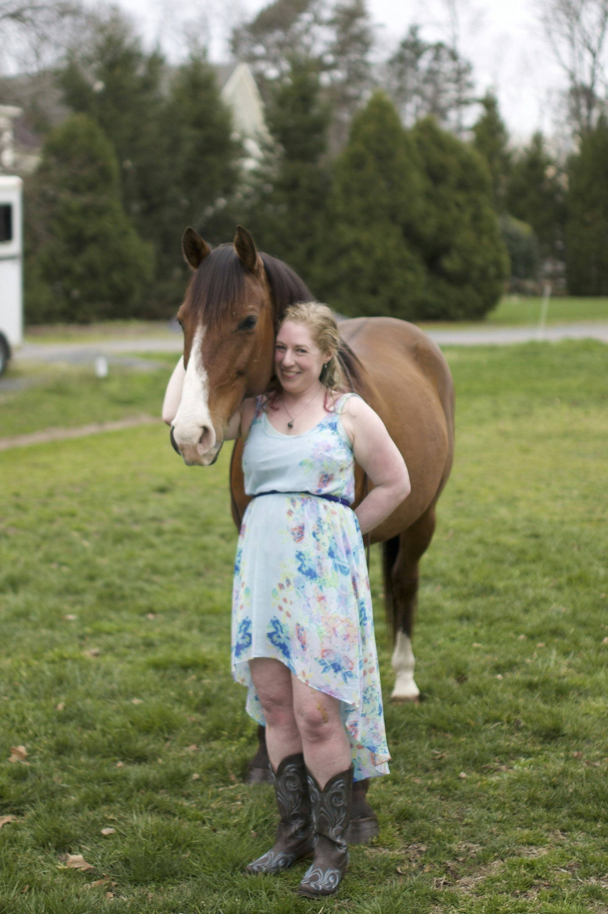
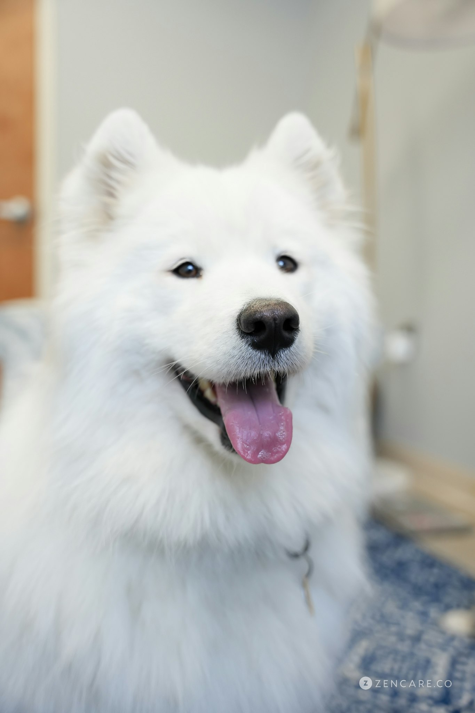

Meet Our Team

Meet Alana
I'm Alana Prato-Shein, LCSW-C (she/her)! My passion as a therapist is to help people find their most authentic and happy selves. I have expertise working with a variety of mental health diagnoses, including anxiety, depression, PTSD, ADHD, bipolar disorder, and personality disorders. Each person's care is centered around where their mental health issues intersect with their identities, including those less accepted or acknowledged—the LGBTQIA+ community, people in polyamorous or other nontraditional relationships, people struggling with chronic health and chronic pain, and children and adolescents finding themselves.
My own identities inform my practice. I live with chronic illness (Ehlers-Danlos, POTS, MCAS, Celiac), I am a neurodivergent therapist (ADHD), I am a prospective adoptive parent, and I am a member of the LGBTQIA+ community. I also come from a family full of healers and a family full of our own mental health struggles. I embrace the working mentality that began with my Pop Pop, Larry Silver, MD: be playful, don't take yourself too seriously, and always remember that no act of kindness, no matter how small, is ever wasted.
When I'm not providing therapy, I am an animal and nature lover! You'll often find me playing with Eir and her brother Sunsum, going on walks, spending time with my horse Oz, and gardening. I am also an avid reader and a vegan ice cream aficionado.

Meet Eir
I'm Eir! I am a Samoyed born January 30, 2019, and I have been working with my mom (or napping in her office) since I was a pup! I love to sit with our clients, especially when they seem stressed or sad. I can be counted on for support in hard moments and silliness to bring up the mood. One of my favourite parts of my day is when I get to do play therapy with our younger clients. I love to learn tricks, paint feelings, and play all sorts of games with them.
When I'm not working, I love to go wading in the Magothy River and chasing my brother around. I also like playing with my collection of Squishmallows, my all-time favourite toy!